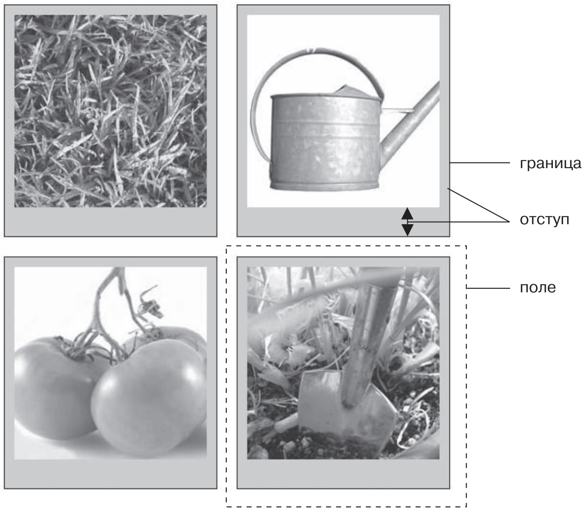

На любой HTML-элемент воздействует множество свойств каскадных таблиц стилей, определяющих, каким образом он будет отображен браузером. Некоторые из них, например границы и фоновый цвет, наглядны. Другие нельзя определить явно (например, отступы и поля), но они также обеспечивают форматирование. Понимая, как эти атрибуты работают, вы можете создать привлекательные колонки, меню, элементы навигации, а также управлять пространством вокруг них (вебдизайнеры называют его воздухом). Это делается для того, чтобы ваши веб-страницы не казались беспорядочными и нечитаемыми и вообще выглядели профессионально
Все свойства, описываемые в текущей главе, — основа блочной модели CSS, которая представляет одну из важнейших составляющих этого языка.
Когда вам говорят об абзаце текста или заголовке, вы представляете буквы, слова, предложения. Фотографии, логотипы и другие изображения должны ассоциироваться с элементом img. Браузер обрабатывает все элементы как небольшие блоки. Для него любой элемент — контейнер с содержимым: текстом, изображением или другими элементами (рис. 7.1). Область внутри границ, которая включает контент и отступы, может также иметь цвет фона. Он находится под границей, поэтому, когда вы используете пунктирную или точечную границу, цвет отображается в промежутках между отрезками или точками
Блок элемента окружают следующие свойства.
рис. 1 Блочную структуру элемента образует его содержимое (например, несколько предложений текста), а также отступы, границы и поля
Для форматирования элемента можно использовать любые из этих свойств в любом сочетании или все сразу. Вы можете снабдить элемент исключительно полями или же добавить границы, поля и отступы. Или элемент может иметь границы и отступ, но без полей и т. д. Если вы не настроите какое-либо из этих свойств, то браузер применит собственные настройки, которые вам могут как понравиться, так и нет. К примеру, хотя браузеры обычно не применяют отступы или границы к элементам на странице, некоторые элементы (например, заголовки и абзацы) имеют верхнее и нижнее поле.
Поскольку разные браузеры применяют отступы и поля разного размера, лучше всего сбрасывать значения этих свойств для всех элементов. Другими словами, используйте набор простых стилей, отвечающих за сброс CSS, для удаления отступов и полей из HTML-элементов. Потом, когда вы будете создавать дополнительные стили, добавляющие поля и отступы, вы сможете быть уверены в том, что страницы будут выглядеть одинаково в разных браузерах.
Как поля, так и отступы добавляют промежутки вокруг содержимого элементов.Свойства margin и padding используются для отделения одного элемента веб-страницы от другого. Можно применять их, например, чтобы добавить пустое пространство между панелью навигации слева и основным контентом веб-страницы справа. Возможно, вы захотите отодвинуть границу от края фотографии (рис. 2).
На рис. 2 отступ разделяет два изображения друг от друга с помощью серого фона. Вы можете устанавливать границы, поля для каждой стороны изображения независимо друг от друга. Обратите внимание, что для нижних краев (оснований) фотографий установлены большие по размеру отступы, чем для остальных.
рис. 2 Каждая фотография на этой веб-странице имеет поле размером 10 пикселов, то есть промежуток, отделяющий две соседние фотографии, составляет 20 пикселов
Свойства padding и margin производят одинаковый визуальный эффект, и, пока вы не добавите границу или цвет фона, вы не сможете сказать наверняка, каким свойством определен этот промежуток. Но если элемент имеет границу по периметру или цветной фон (подложку), вы заметите существенное различие этих свойств. Отступ добавляет промежуток между контентом и границей элемента и предотвращает появление эффекта заключения содержимого элемента в рамку. Он также включает область фона, поэтому пространство, занимаемое отступом, может быть свободно от содержимого (текста или фотографии), но заполнено фоновым цветом или изображением. А поля добавляют так называемые средники — промежутки между колонками, которые придают веб-странице более «воздушный» внешний вид.
Вы можете управлять полями или отступами каждого отдельного элемента независимо. Четыре свойства управляют соответствующими полями с каждой стороны элемента: margin-top, margin-right, margin-bottom и margin-left. Аналогично с отступами: padding-top, padding-right, padding-bottom и padding-left. Вы можете использовать любые единицы измерения, принятые в языке CSS, для определения размеров полей и отступов, например:
margin-right: 20px;
padding-top: 3em;
margin-left: 10%;
Пикселы и единицы em применяются и работают точно так же, как при форматировании текста (см. раздел «Изменение размера шрифта» главы 6). Поле размером 20 пикселов добавляет соответствующий пустой промежуток, отступ 3 em — промежуток, в три раза больший, чем размер шрифта форматируемого элемента.
Обычно используются значения в процентах. С их помощью можно гибко задавать значения границ и отступов, которые будут зависеть от ширины окна браузера, что идеально подходит для адаптивного дизайна.
Чтобы удалить все пространство полей и отступов, используйте свойства со значением 0 (например, margin-top: 0 или padding-bottom: 0). Чтобы убрать все дополнительное пустое пространство с четырех сторон окна браузера, нужно присвоить свойствам margin и padding нулевые значения: margin: 0; padding 0;. Это позволит поместить баннер, заголовок, логотип или какой-то другой элемент веб-страницы вплотную у самого края окна браузера, без промежутков.
При использовании процентов браузеры вычисляют размер полей и отступов на основе ширины самого элемента-контейнера, в который заключены форматируемые элементы. Рассмотрим самый простой случай, когда таким элементом-контейнером является body, который имеет ширину всего окна браузера. В данном случае значение в процентах в каждый конкретный момент времени вычисляется на основании текущей ширины окна. Допустим, оно составляет 760 пикселов. Тогда левое поле, равное 10%, добавит промежуток 76 пикселов слевого края форматируемого элемента. Но если вы измените размеры окна браузера, то размер промежутка левого поля тоже изменится. Уменьшение до 600 пикселов изменит размер на 60 пикселов (10 % от 600 пикселов).
Однако элемент-контейнер не всегда равен ширине окна браузера. В последующих главах книги, когда мы будем создавать более сложный дизайн вебстраниц, вы увидите, что для разработки комплексного дизайна придется добавлять дополнительные элементы.
Возможно, вы захотите добавить в веб-страницу элемент div для группировки содержимого навигационной панели. Допустим, она имеет ширину 300 пикселов. div будет контейнером для всех остальных вложенных в него элементов. Таким образом, размер правого поля любого элемента, вложенного в div навигационной панели и установленного в размере 10 %, будет равен 30 пикселам.
При установке процентных значений верхнего и нижнего полей элементов ситуация еще более запутанная: эти значения вычисляются на основании ширины элемента-контейнера, а не его высоты. Таким образом, 20%-ное верхнее поле составит 20% от ширины форматируемого элемента-контейнера.
Нередко требуется одновременно установить одинаковые размеры полей или отступов для всех четырех сторон форматируемого элемента. Но последовательно набирать четыре различных свойства стиля (margin-right, margin-left и т. д.) утомительно и отнимает лишнее время. Здесь вы также можете использовать сокращенные варианты свойств margin и padding для быстрой установки всех четырех параметров одновременно:
margin: 0 10px 10px 20px;
padding: 10px 5px 5px 10px;
Если свойству присваивается значение 0, то совсем не нужно указывать единицу измерения. Например, наберите всего лишь margin: 0; вместо margin: 0px;.
Порядок определения четырех значений свойств margin и padding важен. Они должны указываться в следующей последовательности: сверху, справа, снизу и cлева. Без учета этого у вас могут возникнуть проблемы с форматированием. Самый легкий способ запомнить очередность — сверху вниз по часовой стрелке.
Если вы хотите применить одинаковое значение свойства для всех четырех сторон, нет ничего проще — используйте единственное значение. Чтобы удалить все поля из заголовка h1, добавьте такой стиль:
h1{
margin: 0;
}
Кроме того, пользуйтесь сокращенной записью для добавления промежутков между содержимым и границами элемента:
padding: 10px;
Если нужно применить одинаковое значение свойства поля или отступа сверху и снизу элемента и одно и то же значение для левого и правого края, можно указать два значения. Так, объявление margin: 0 2em; удаляет верхнее и нижнее поля, а левое и правое поля устанавливает равными 2 em. Точно так же, если верхние и нижние поля (или отступы) изменяются, а правые и левые остаются прежними, можно воспользоваться тремя значениями. Например, объявление margin: 0 2em 1em; установит верхнее поле равным 0, левое и правое — равными 2 em, а нижнее поле — 1 em.